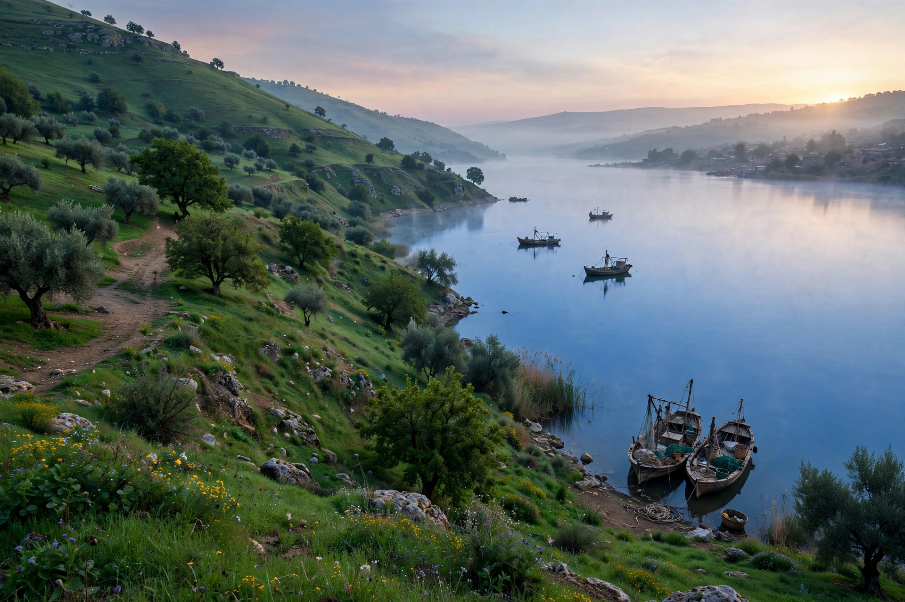

| Galilee | |
|---|---|
 | |
| Country | Israel (Northern District), small part in southern Lebanon |
| Highest point | Mount Meron, 1,208 m |
| Major cities | Nazareth, Tiberias, Safed, Acre, Haifa (western edge) |
| Principal lake | Sea of Galilee (Lake Kinneret) |
Galilee (Hebrew: הַגָּלִיל, HaGalil; Arabic: الجليل, al-Jalīl) is a region in northern Israel and southern Lebanon whose boundaries include the Jezreel Valley to the south, the Jordan Valley and the Hula Valley to the east, the Mediterranean coast to the west, and the Litani River to the north. It is traditionally divided into Upper Galilee, Lower Galilee and Western Galilee.
Upper Galilee is a highland region rising to Mount Meron (1,208 m), the highest peak in Israel west of the Jordan. Lower Galilee, further south, consists of lower hill ranges separated by wide valleys. The Sea of Galilee (Lake Kinneret), Israel's largest freshwater lake, lies in the rift valley at about 210 metres below sea level. The region has a Mediterranean climate and is one of the greenest parts of the country.
Galilee was settled from prehistoric times and formed part of the territory allotted in the Hebrew Bible to the tribes of Naphtali, Zebulun, Issachar and Asher. In the Second Temple period it was a largely Jewish region and the scene of much of the ministry of Jesus of Nazareth, who came from Nazareth; many of his disciples were Galilean fishermen from towns such as Capernaum on the Sea of Galilee. After the Bar Kokhba revolt, Galilee became the centre of Jewish life in the land: the Mishnah and the Jerusalem Talmud were compiled in its towns, including Tiberias and Sepphoris.
In the medieval and Ottoman periods the hill town of Safed became one of the Four Holy Cities of Judaism and a centre of Kabbalah. The region's population came to include large Arab Muslim and Christian communities and Druze villages. Galilee was incorporated into the State of Israel in 1948; its Arab population today forms a large share of Israel's Arab citizens, and the region contains a mosaic of Jewish, Arab, Druze and Circassian communities.
Galilee is a major destination for Christian pilgrimage (Nazareth, Capernaum, the Mount of Beatitudes), Jewish heritage tourism (Safed, Tiberias) and nature tourism in its streams, reserves and forests. Agriculture — olives, citrus, vineyards and dairy farming — remains important, alongside industry in and around Haifa Bay.
See also: Sea of Galilee · Nazareth · Salome